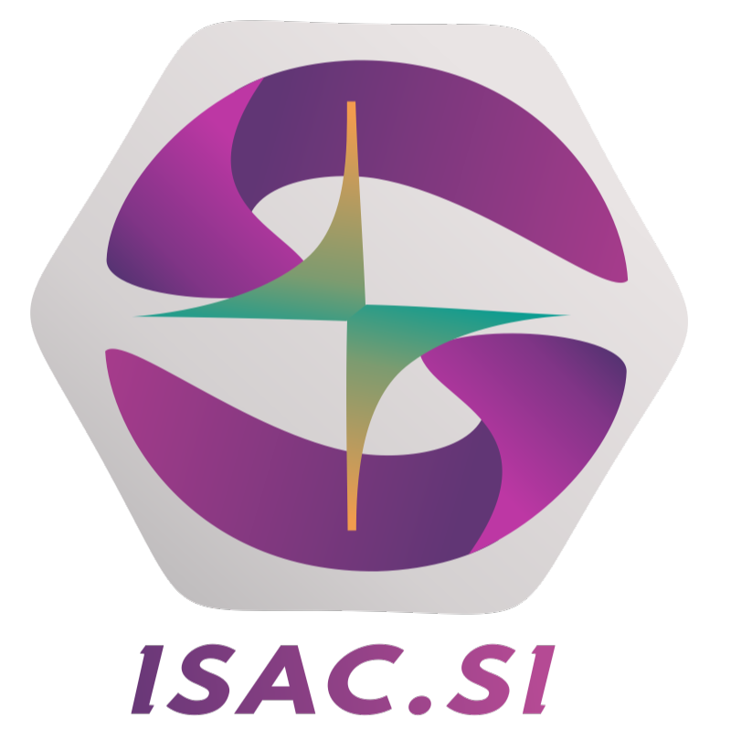

ISAC.SI is MRDI's internal capability-based learning platform built for active cohorts. It helps students, tutors, and directors track progress beyond attendance and marks by mapping actual learning milestones, project execution, and workshop readiness.
Students receive structured learning blocks aligned to workshop skills, diagnostics, systems understanding, and project work.
Learning is connected to real assignments, submissions, milestone completion, and capability evidence.
Tutors validate progress, identify gaps, and help students move from theory consumption to repeatable execution.
Why ISAC.SI
Traditional systems track attendance, marks, and content completion. ISAC.SI is different. It follows how learners progress through capability-based modules, practical tasks, workshop behavior, and project readiness inside MRDI's structured programs.
Each module is tied to practical skill development, not just lecture consumption. Students move through outcomes that can be observed, practiced, and verified.
Progress is reviewed by tutors, giving MRDI a stronger picture of readiness than self-reported completion or test marks alone.
Students do not learn in isolation. ISAC.SI connects modules, assignments, and workshop execution with the projects they help build.
Leadership can see cohort movement, pending verifications, and training progress across batches without manually collecting updates.
The platform creates clarity around what to learn next, what has been completed, and where intervention is needed to keep momentum.
ISAC.SI supports the same capability philosophy behind MRDI's broader ISAC ecosystem, helping learning behavior become measurable over time.
Learning Journey
The platform mirrors MRDI's training flow so every learner knows where they stand, what comes next, and how their practical growth is being measured.
Students enter their program with defined modules, training phases, and tutor visibility from day one.
They work through structured content, practical tasks, and milestone-based assignments linked to the program timeline.
Tutors verify progress and intervene where learning quality, execution, or consistency needs support.
The learning record becomes part of how MRDI understands real capability progression inside active batches.
ISAC.SI is designed for enrolled MRDI students and the internal training team. It is not an open public tool like ISAC.XP. Access is tied to MRDI's active learning ecosystem.
When learning is structured and visible, coaching becomes faster, accountability improves, and students get clearer support on their route from beginner to execution-ready engineer.
Platform Roles
ISAC.SI is useful because each stakeholder sees the right layer of the learning process without losing connection to the same student journey.
Students see what to learn, what is pending, and which milestones are already verified.
Tutors can monitor learning consistency and respond early when students need intervention.
Leadership gets a broader operational view of how cohorts are moving and where support is required.
MRDI Access
ISAC.SI is available as part of MRDI's structured programs. If you want access to the platform, the right first step is to enquire about joining an MRDI cohort.